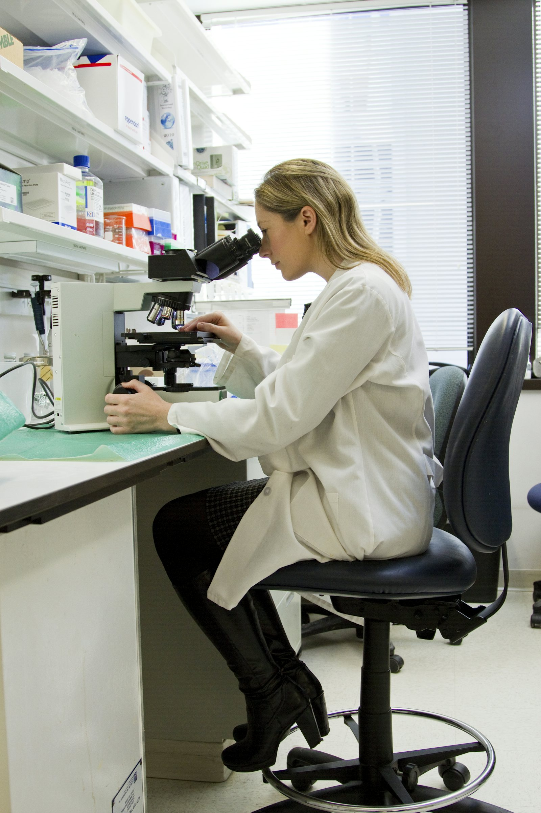

How we work.
From first conversation to final report, one accountable BioVeritas team leads the science and coordination. Qualified partner organisations provide study-specific facilities where required.
How we work
From first conversation to final report, one accountable BioVeritas team leads the science and coordination. Qualified partner organisations provide study-specific facilities where required.
Discuss your project
BioVeritas provides scientific leadership, study coordination and quality oversight. Partner laboratories, clinical sites and specialist facilities deliver study-specific capabilities under that oversight.
Initial consultation
We understand the product, the question and the decision the work must support, and review existing data.
BioVeritasProject planning & study design
Protocol, endpoints, guidelines, timelines and budget agreed before any work is placed.
BioVeritasPartner selection
A laboratory, clinical site or facility qualified for the specific study is selected and contracted.
BioVeritasExecution coordination
Study conduct at the partner facility, coordinated by BioVeritas with milestone reviews.
BioVeritas + partnerQuality oversight & data review
Documentation checks, data review, biostatistics and scientific interpretation.
BioVeritasFinal reporting
Study reports and regulatory documentation prepared for the intended submission or decision.
BioVeritasBioVeritas
Scientific lead and single point of accountability- Scientific consultation and study design
- Project planning, timelines and budgets
- Partner qualification and selection
- Execution coordination and milestone reviews
- Quality oversight, data review and interpretation
- Final reporting and regulatory documentation
& oversight
Qualified partner organisations
Study-specific facilities and capabilities- GLP-compliant test facilities for regulated safety studies
- CPCSEA/CCSEA-registered animal facilities
- Analytical and bioanalytical laboratories
- GCP clinical sites and investigators
- Contract manufacturers
- Formal Study Director responsibilities where GLP requires
Partners are assessed for capability, quality systems and documentation practice before sponsor work is placed, and work under confidentiality obligations no less protective than our own.
Three engagement models.
Choose a full development partner or specialist support at a single milestone. Select a model to see how it works.
Full-Programme Partner
Coordinated support across preclinical, clinical and regulatory work, with one scientific lead.
When to use: Multi-stage programmesMilestone Specialist
Targeted support at a single decision point or deliverable.
When to use: Specific deliverableWhite-Label / CRO Support
Scientific or operational support for other CROs and lean organisations.
When to use: Capacity gapsFull-Programme Partner
Best for sponsors who want one partner from concept to submission.
Discuss this model- One scientific lead and project plan for the whole programme
- Studies sequenced so each result informs the next
- Partner selection, coordination and oversight handled by BioVeritas
- Integrated reporting and regulatory documentation
Milestone Specialist
Best for sponsors who need one study or deliverable done well.
Discuss this model- IND-enabling or product safety studies
- BA/BE studies and bioanalytical method validation
- Clinical study coordination for a defined protocol
- Pre-submission review and regulatory documentation
White-Label / CRO Support
Best for CROs, consultancies and lean teams needing extra scientific capacity.
Discuss this model- Protocol design and optimisation
- Scientific review and data interpretation
- Medical and regulatory writing
- Overflow study coordination under your brand